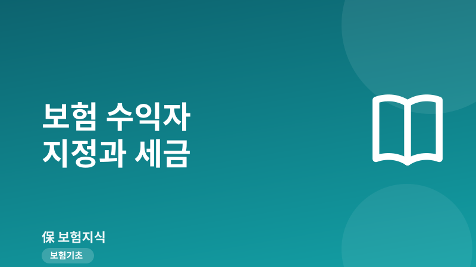
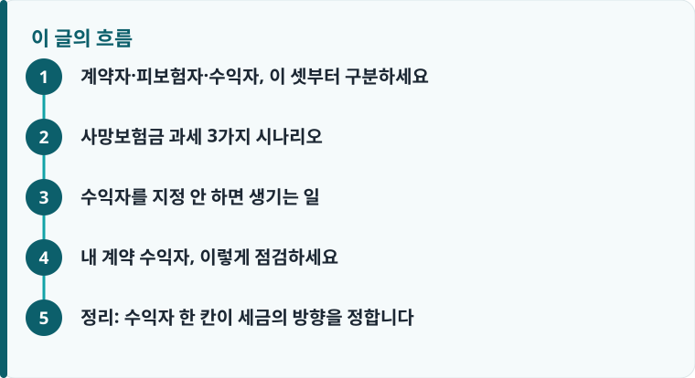

세금을 가르는 기준은 ‘누가 보험료를 실제로 냈는가’입니다. 계약자·피보험자·수익자 세 칸의 조합에 따라 상속세·증여세·비과세가 갈립니다.
사망 수익자와 만기·중도 수익자는 따로 지정할 수 있고, 계약 유지 중 계약자가 언제든 변경할 수 있습니다(피보험자 동의가 필요한 경우가 있습니다).
수익자를 특정인으로 지정하면 그 보험금은 수익자의 고유재산이 되어, 빚 상속 상황에서 상속포기를 해도 받을 수 있는지가 달라집니다.
계약자·피보험자·수익자, 이 셋부터 구분하세요
보험 계약에는 이름이 비슷해 헷갈리는 세 주체가 있습니다. 계약자는 보험회사와 계약을 맺고 보험료를 내는 사람, 피보험자는 보험의 대상이 되는 사람(이 사람에게 사망·질병 등 사고가 나면 보험금이 발생), 수익자는 실제로 보험금을 받는 사람입니다. 종신보험이나 정기보험에 가입할 때 대부분 청약서 한 장에서 세 칸을 채우는데, ‘그냥 다 나로 하면 되겠지’ 하고 넘기는 경우가 많습니다.
그런데 이 세 칸을 누구로 두느냐가 나중에 붙는 세금의 종류 자체를 바꿉니다. 세무 당국이 보는 핵심은 단 하나, ‘그 보험료를 실제로 부담한 사람이 누구인가’입니다. 내가 낸 돈을 내가 돌려받는 구조인지, 남이 낸 돈을 내가 받는 구조인지에 따라 상속·증여·비과세가 갈리는 것입니다. 보장 성격을 먼저 이해하고 싶다면 정기보험과 종신보험의 차이를 함께 읽으면, 왜 종신보험이 상속 설계에 자주 쓰이는지 이해가 빨라집니다.
사망보험금 과세 3가지 시나리오
가장 헷갈리는 사망보험금을 세 가지 대표 구조로 나눠 보겠습니다. 같은 1억 원의 사망보험금이라도 결과가 완전히 달라집니다.
① 계약자=피보험자(본인), 수익자=상속인 → 상속세. 내가 계약자이자 피보험자로 보험료를 내고, 내가 사망하면 자녀·배우자 같은 상속인이 받는 가장 흔한 형태입니다. 이때 사망보험금은 상속재산으로 봐 상속세 대상이 됩니다. 정확히는 피상속인(사망자)이 실질적으로 보험료를 부담한 부분에 대응하는 보험금을 상속재산으로 봅니다. 다만 상속세에는 배우자공제·일괄공제 등 기본 공제가 크게 적용되므로, 전체 상속재산이 공제 한도 안이면 실제 세금은 나오지 않을 수도 있습니다.
② 계약자=수익자(같은 사람), 피보험자만 다른 사람 → 비과세. 예를 들어 아내가 계약자로서 직접 보험료를 내고, 남편을 피보험자로 두고, 수익자도 아내로 지정한 경우입니다. 남편 사망 시 아내가 받는 보험금은 상속세·증여세 모두 원칙적으로 비과세입니다. 본인이 낸 돈을 본인이 돌려받는 구조여서 ‘재산의 무상 이전’이 없기 때문입니다. 단, 이 구조가 인정되려면 계약자인 아내가 실제 소득으로 보험료를 냈다는 사실이 뒷받침되어야 합니다.
③ 계약자·피보험자·수익자가 각각 다른 사람 → 증여세. 아버지가 보험료를 내고(계약자), 어머니를 피보험자로 두고, 수익자를 자녀로 지정한 경우가 대표적입니다. 어머니 사망으로 자녀가 보험금을 받으면, 이는 아버지가 낸 돈이 자녀에게 넘어간 셈이므로 증여세 대상이 됩니다. 좋은 뜻으로 자녀를 수익자로 넣었다가 예상 못 한 증여세를 만나는 경우가 여기서 나옵니다. 결국 세 시나리오를 관통하는 판단 기준은 ‘누가 보험료를 냈고, 누가 받느냐’ 하나입니다.
참고로 순수보장형이냐 만기환급형이냐에 따라 만기·해지 시점의 자금 흐름도 달라지므로, 상품 성격은 만기환급형과 순수보장형 비교에서 함께 확인해 두면 좋습니다.

수익자를 지정 안 하면 생기는 일
사망보험금 수익자를 아예 지정하지 않거나 ‘법정상속인’으로만 두면, 보험금은 민법상 법정상속인에게 지급됩니다. 이때 중요한 특징이 하나 있습니다. 특정인을 수익자로 지정했거나 법정상속인이 받는 사망보험금은, 원칙적으로 상속재산이 아니라 수익자의 고유재산으로 봅니다. 즉 피상속인이 남긴 재산을 물려받는 것이 아니라, 계약에 따라 수익자가 직접 취득하는 권리라는 뜻입니다.
이 차이는 빚이 많은 상황에서 결정적입니다. 사망자에게 빚이 많아 상속인이 상속포기를 하더라도, 사망보험금은 고유재산이므로 원칙적으로 수령이 가능합니다. 반대로 예금·부동산 같은 상속재산은 상속을 포기하면 받을 수 없습니다. 다만 이는 어디까지나 원칙이고, 사안에 따라 판단이 달라질 수 있어 실제 상황에서는 반드시 전문가 확인이 필요합니다. 한편 오래전 가입해 잊고 있던 계약이 있다면 숨은 보험금 찾기로 수익자·계약 상태를 먼저 점검해 보는 것도 방법입니다.
또 하나 알아둘 점은, 사망 시 받는 수익자와 만기·중도에 받는 수익자를 따로 지정할 수 있다는 것입니다. 예컨대 저축성 보험에서 만기환급금은 계약자 본인이 받되, 사망보험금은 배우자가 받도록 나눠 설계할 수 있습니다. 그리고 수익자는 계약을 유지하는 동안 계약자가 언제든 변경할 수 있습니다. 다만 사망보험금 수익자를 바꿀 때는 피보험자의 동의가 필요한 경우가 있으니, 변경 절차는 보험회사에 확인해야 합니다.
작성·검수 기준
이 글은 특정 보험상품 가입을 권유하기 위한 것이 아니라, 계약자·피보험자·수익자 조합에 따라 세금과 상속 결과가 달라지는 일반적인 구조를 설명하기 위해 작성했습니다. 여기서 다룬 상속세·증여세·비과세 판단은 대표적 사례를 단순화한 것이며, 실제 과세 여부는 보험료 부담 주체, 공제 항목, 계약 변경 이력, 개별 사실관계에 따라 달라질 수 있습니다.
세법과 과세 기준은 개정될 수 있으므로, 상속·증여가 걸린 계약은 가입·변경 전에 세무사 등 전문가 상담을 받는 것이 가장 안전합니다. 계약의 세금 성격을 함께 이해하려면 연금보험과 세액공제 구조도 참고하세요.
내 계약 수익자, 이렇게 점검하세요
지금 가입한 종신·정기·저축성 보험 증권을 펴 놓고, 아래 순서대로 세 칸을 확인하면 대부분의 문제를 걸러낼 수 있습니다. 상속세 재원 마련이 목적인 종신보험이라면, 남은 가족이 세금을 내기 위한 현금을 만들어 준다는 취지에 맞게 구조가 짜여 있는지가 특히 중요합니다.
- 증권에서 계약자·피보험자·수익자 세 칸을 각각 확인하고, 실제 보험료를 내는 사람이 계약자와 일치하는지 봅니다.
- 사망보험금 수익자가 누구인지, 미지정·법정상속인으로 되어 있는지 확인합니다. 목적에 맞는 특정인이 지정되어 있는지 점검합니다.
- 내 계약이 앞의 세 시나리오 중 어디에 해당하는지(상속세·증여세·비과세) 대입해 봅니다.
- 상속세 재원이 목적이라면, 상속인이 될 배우자·자녀를 수익자로 나눠 지정해 자금이 필요한 사람에게 직접 가도록 설계했는지 확인합니다.
- 구조를 바꿔야 한다면 계약자·수익자 변경 절차와 피보험자 동의 필요 여부를 보험회사에 문의하고, 세금이 걸린 변경은 세무 전문가와 먼저 상의합니다.
정리: 수익자 한 칸이 세금의 방향을 정합니다
보험금 자체는 같아도, 계약자·피보험자·수익자를 어떻게 조합했느냐에 따라 상속세가 되기도, 증여세가 되기도, 세금이 없기도 합니다. 판단의 축은 언제나 ‘누가 보험료를 실제로 냈는가’ 하나입니다. 지금 증권을 열어 세 칸을 확인하고, 목적(보장·상속·증여)에 맞는 수익자가 지정돼 있는지 점검하는 것만으로도 예상 못 한 세금과 분쟁을 크게 줄일 수 있습니다.
다른 보험 정보 글이 궁금하다면 보험지식 블로그에서 이어 읽어 보세요. 가입 전에는 반드시 약관과 상품설명서를 확인하는 것이 가장 안전한 방법입니다.